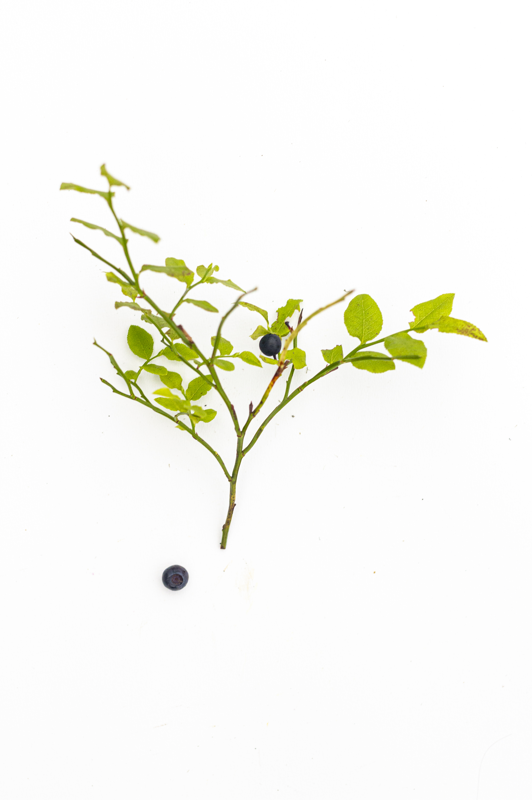
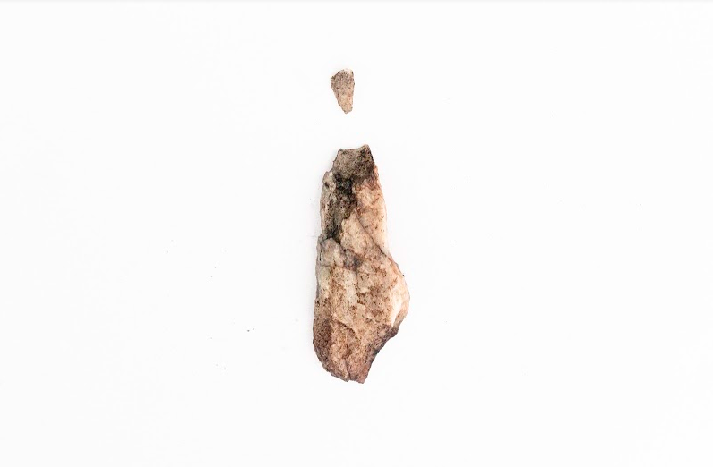
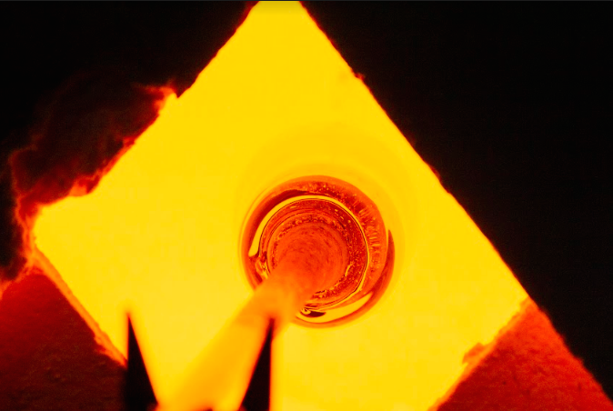
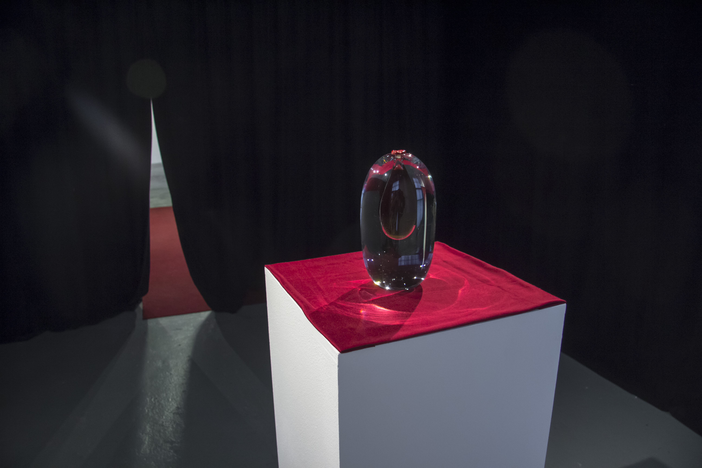

National Landscape as a Concentrate
Aleksi Jaakkola and Harri Piispanen
Two men wearing black suits and ties are hiking in the middle of Finland’s best-known national landscape. They are
Harri Piispanen and Aleksi Jaakkola, Kansallisromantikot - the National Romantics. According to their own definition
the two artists carry out performative explorations. The method used during these artistic explorations is several
days of hiking in the landscape wearing suits.
Landscape is concrete. A national landscape on the other hand exists only as a concept. How can something immaterial
be turned into a tangible form? What does it feel, smell or taste like? Can it be turned into a product? Is it ok to
laugh at it? And to whom does it actually belong to?
The National Romantics have visited Koli. The result of the exploration is a new depiction of the iconic national
treasure: The Essence of Koli, a concentrate of the national landscape. It is an extract, a miracle tincture,
snake-oil or luxurious elixir.
This delicate depiction of the national treasure can also be savoured as a hot beverage. The National Romantics
recommend using a single drop of the Essence in a cup of boiling water.
You can follow the procedure listed below to re-create the landscape concentrate as intended by the National
Romantics.
The Essence of Koli - Recipe
-Collect ingredients that depict the selected landscape (ingredients for Koli listed below)
-Create an extract (see Extraction process for details)
-Bottle the extract in a suitable vessel
-Serve in a ceremonial manner worthy of the landscape
Ingredients
Rasberry (Rubus idaeus)

Cloudberry (Rubus chamaemorus)

Lesser burnet (Pimpinella saxifraga)

Arctic bramble (Rubus Arcticus)

Bladder campion (Silene vulgaris)

Self-heal (Prunella Vulgaris)

Bilberry, berries and stems (Vaccinium Myrtillus)

Quartsite (The Secret Ingredient)

Wig knapweed (Centaurea Phrygia)

Common haircap (Polytrichum commune)

Girgensohn's bogmoss (Sphagnum girgensohnii)

Beard lichen (Usnea dasypoga)

Resin, European spruce (Picea abies)

European goldenrod (Solidayo virgaurea)

Cup lichen (Cladonia fimbriata)

Northern Labrador tea (Rhododendron tomentosum)

Sunshine lichen (Vulpicida pinastri)
Charcoal, Pine (Pinus sylvestris)
Extraction process
Mince each plant separately. Place the minced plan matter into separate sealable glass containers. Fill the
containers with Spiritus Fortis (Ethanolum 96 %) til the dry mass or material is fully submerged to the liquid.
Leave the plants to extract for 11 months.
Hereafter, separate plant particles from the liquid by filtration. Subsequently, evaporate the alcohol rich
extraction by ⅔ of its mass content.
Repeat this procedure with all the ingredients separately, in the fullness of time, you will have eighteenth
separate bottles with single filtered and evaporated extracts.
Note: Remember to label each container or bottle accurately.
Preparing the National Landscape for consumption (50 servings):
Take 5/100 tspm of each extract with pipette to one container. Gently stir or mix and let it rest while preparing
other ingredients.
Prepare serving cups, lit candles and empty your mind from unnecessary thoughts while heating water on the stove or
other heaters.

When the water is boiling, let it rest a while before pouring into the cups. Next, add a drop of the mixed extract
(0,01 tspm) to each serving cup.

Essence of Koli- Galleria Huuto